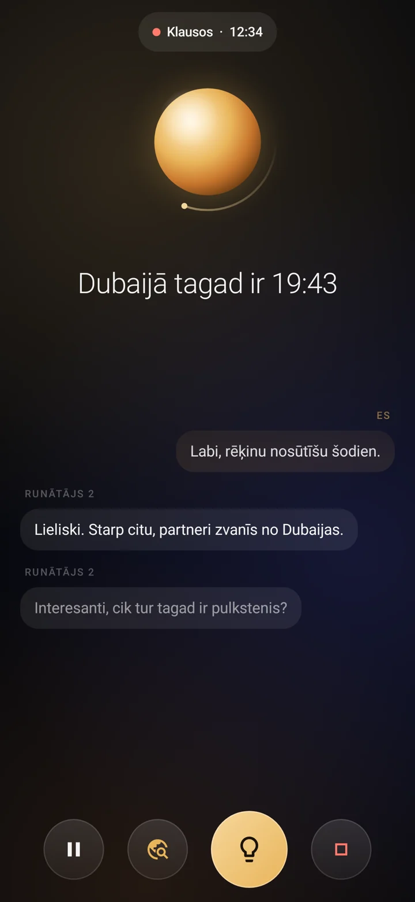
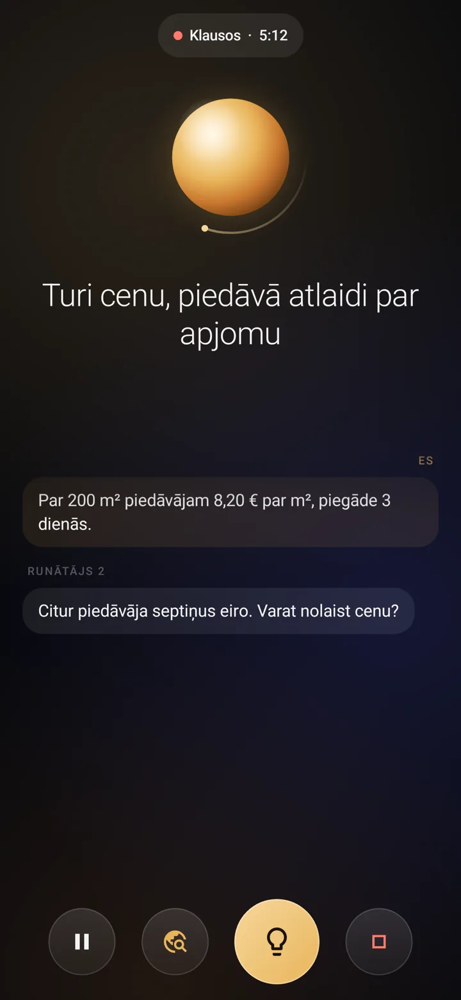
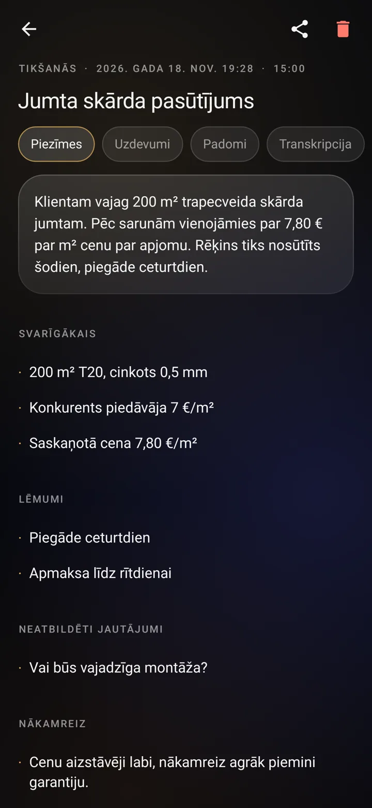

Tiešraides sarunu asistents
Otrs prātstavā ausī.
Enkirai klausās tikšanos, zvanu vai pārrunas un ~1,7 sekundēs iečukst atbildi austiņā. Pēc sarunas piezīmes un uzdevumi jau gatavi.
Drīzumā Google Play
Atbilde ausī, pirms pauze kļūst neveikla.
Enkirai dzird jautājumu, izlemj, vai ir vērts palīdzēt, un iečukst dažus vārdus austiņā. Aptuveni 1,7 sekundes no sākuma līdz beigām.

Ko Enkirai dara tavā vietā

Tikšanās beidzās. Piezīmes jau gatavas.
Kopsavilkums, lēmumi, atklāti jautājumi un uzdevumi ar atbildīgajiem un termiņiem, apmēram desmit sekundes pēc beigām. Ar vienu pieskārienu nokopē visu.

5 valodas
Lietuviešu, angļu, poļu, latviešu un igauņu, pat ja tās jaucas vienā sarunā.
Privātums pirmajā vietā
Transkripcijas paliek tavā telefonā. Bez reklāmām, bez datu pārdošanas. Pasaki sarunu biedriem, ka veic piezīmes ar AI.
Dzirdi to pirmais.
Piesakies gaidītāju sarakstā. Testētāji saņem agrāku piekļuvi un gadu bez maksas.
Drīzumā Google Play